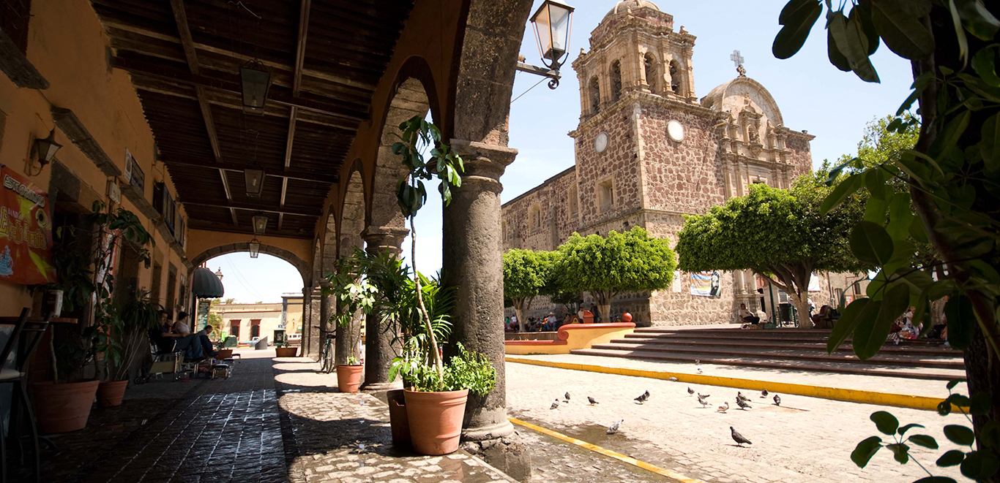

Conoce Tequila

Tequila es un Pueblo Mágico de Jalisco conocido por su tradición, cultura y por la producción de tequila. Sus paisajes de agave y sus calles forman parte de la identidad de esta región.
Un lugar lleno de tradición y cultura

Tequila es un Pueblo Mágico de Jalisco conocido por su tradición, cultura y por la producción de tequila. Sus paisajes de agave y sus calles forman parte de la identidad de esta región.